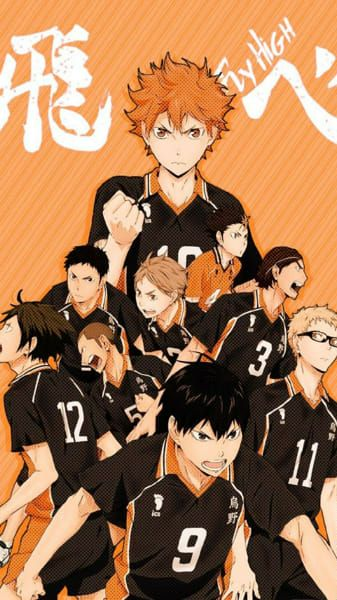

Kimetsu no Yaiba (Demon Slayer)
Com inspiração no mangá homônimo de Koyoharu Gotōge, Kimetsu no Yaiba foi lançado em 2019. Esse anime apresenta a história de Tanjiro Kamado, um jovem que volta ao seu vilarejo e encontra a sua família morta. Todos os seus familiares foram mortos por demônios (oni) e a única sobrevivente foi a sua irmã, que foi transformada num oni. Para salvá-la, Tanjiro torna-se um caçador de demônios. As cenas de luta deste anime são especialmente boas. Em 2021, foi lançado um arco em formato filme, o Mugen Train.

Nanatsu no Taizai
Em um mundo que se assemelha à Europa na Idade Média, cavaleiros tentam proteger a região da Britânia com o uso de poderes mágicos. Traições, tiranos e muita ação e aventura te aguarda neste celebrado anime que chega ao fim com sua quarta temporada em 2021.

Attack on Titan
Durante algum tempo, a humanidade manteve-se à parte dos Titãs devoradores de gente. Mas isso mudou após as proteções serem destruídas. A humanidade corre risco de desaparecer, e Eren Jaeger e seus amigos precisam impedir que isso aconteça. Lançado em 2013, Attack on Titan é baseado no mangá de mesmo nome e um dos mais celebrados ao redor do mundo!

Haikyuu!!
Haikyuu!! conta a trajetória de Hinata, um jovem amante de voleibol que apesar da baixa estatura é um ótimo atacante. Inspirado por um antigo atleta conhecido como 'Pequeno Gigante', Hinata vai entrar para a escola Karasuno e tentar levantar o time que passa por um período de dificuldades em campeonatos.

One Piece
Basicamente, esse anime foca, sobretudo, na trama do pirata Monkey D. Luffy e seu grupo, os “Piratas do Chapéu de Palha”. Assim, o objetivo do jovem é encontrar o One Piece e se tornar o Rei dos Piratas.
Além do mais, esse anime conta com uma mitologia que contém diversas raças. Por exemplo, os sereianos, anões, gigantes, e outras criaturas bizarras que habitam os vários mares descritos no anime.
Hunter x Hunter
Todavia, apenas a segunda versão será destacada aqui, pois ela foi considerada, por muitos, como a mais completa. Além de trazer a adaptação de todos os arcos vistos no mangá.
No mais, a história conta sobre o universo criado por Yoshihiro Togashi, o qual é muito rico.
Ele possui um sistema de magia único que é através do uso do Nen, ou seja, a energia da própria aura, e também possui uma mitologia bastante característica.
Uma curiosidade sobre esse anime é que cada arco é como se fosse um anime à parte, com temáticas diferentes e inclusão de personagens exclusivos.